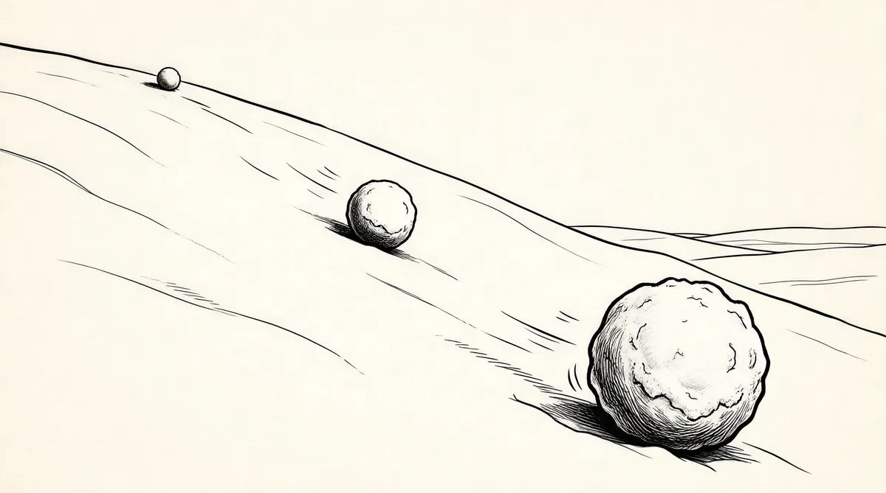

第59章 冬天

苏珊还是不愿意接受放疗，由于对放疗的焦虑不安而开始大量服用安定文。“艾斯利医生告诉我一些安定文的知识，”苏茜说，“告诉我不能再让母亲大量服用，但是一提到放疗她就紧张不安。”
沃伦认为不接受放疗就是自暴自弃：如果放疗治愈效果更好，为什么不呢？他告诉她，手术是最痛苦的，而放疗没有那么痛苦。但是放疗科医生对苏珊说，如果有人和你谈到自己的放疗经验，说不是非常痛苦，千万别相信他们。在嘴里进行放射治疗不同于其他部位的放射治疗。治疗后口腔会彻底被灼伤，什么东西吃起来都像铁块一样。唾液腺可能受损或者彻底被毁坏，而且会失去全部味蕾。疼痛自然是不能免的，苏珊已经经历了巨大的痛苦，她认为自己有权拒绝更大的痛苦。
她看到过许多人辞世，看到他们经受了不堪忍受的痛苦。我们都希望可以延续她的生命。她不惧怕死亡，但是莫名其妙地认为接受放疗就完全失去了自我，放疗的结果可能就是在生命的最后经受更大的痛苦。我们就此谈了很长时间，一次又一次地劝她接受放疗，最终还是需要她自己做出决定。但是另一方面，现在的情况有些让人摸不着头脑。她一直都说：“我知道自己的想法不对。”她让两位医生以最好的方式作好最坏的打算，却只是因为他们更愿意那么做。
为了减轻焦虑，每天晚上睡前她都听歌手博诺的歌。博诺在一次奈特捷的活动中认识了沃伦，后来和苏茜成为好朋友。现在苏珊睡觉的时候就听着U2乐队的《神采飞扬》，伴着《我只要你》的歌声入睡。
我们不要承诺
今生今世
我只要你……
在奈特捷的活动中，博诺第一次和沃伦说话，只是问他可不可以和自己聊一刻钟。
我不知道博诺要说什么。他问了我几个问题，不知为什么我们非常投缘。我给他提出一条建议，他非常喜欢，说：“真是动人的旋律！”“简直难以置信，一刻钟就创造出四首旋律。”……我喜欢音乐，但是U2的音乐确实没有让我着迷。我感兴趣的是博诺在U2的四个成员中间平等分配收入的本领。
赚钱多能让一个人显得魅力十足、风趣幽默而又智慧超群，巴菲特很多时候对此能保持足够的理性。然而，他还是不断感受到惊喜，因为不管什么类型的名人都认识自己。无论他如何努力想冷静对待，当博诺把他当作一位智者时，他都比一般人把他当名人时更感到荣幸。博诺在美国腹地巡演期间来到奥马哈，和巴菲特取得联系，认识了苏茜。苏茜从内心深处还是一个热爱摇滚的女孩子，同样也着迷于这位歌手对她的吹捧和热情。这位全世界最大的摇滚乐队的热心领袖，以一种浪漫而新潮的高贵气质吸引了苏茜和她的母亲，U2的音乐表现出一种对爱与和平的精神向往。他们的使命——“索取越多、感动越少、付出才有回报”——完全与苏茜和苏珊的观点吻合。他邀请苏茜加入他的慈善组织DATA（非洲的债务、艾滋病和贸易改革）的董事会。他也给苏茜的孩子们留下了深刻的印象。
他和我的外孙们——苏茜的孩子，埃米莉和迈克尔——都非常投缘。他和埃米莉一起聊天，对她产生了巨大的影响。
第二年夏天，博诺安排埃米莉到DATA实习。但是，苏珊却一直没有见外孙女的这位摇滚明星老板。她似乎觉得自己已经完成了在这个世界上的个人使命。“我为什么不能余生就躺在床上呢，”她说，“外孙们可以出去打拼，那样很不错。”开玩笑呢吧？苏茜心想。不能这样。“您必须起来！”她告诉母亲，“您不能这样一直躺在床上！您应该接受放疗，一定会好起来的，您还可以继续到各国旅游。”苏珊一脸吃惊地问道，“你真的这么想吗？”1
后来苏珊终于决定接受放疗，定做了一个特制的面具，放疗科医生用来罩在她的脸上，保证放疗的安全。巴菲特也开始了解妻子进行放射治疗的一些相关细节。
我对放疗科医生的工作非常着迷，医生设计面具，确定攻角大小。她在电脑上给我说明每个角的受力状况，舌头和声带的位置。
苏珊的一些朋友认为她可能是为了照顾别人的情绪才同意接受放疗，完全不是自己的意愿。无论如何，她同意接受33次放射治疗，一周5次，周末休息，从12月中旬开始治疗。医生们强调连续放疗的重要性，却依然选择在周末不进行治疗，巴菲特对此百思不得其解，他认为这是医生们为了自己方便而选择的做法，非常担心这样的治疗方案会影响妻子的康复。
苏珊第一次放疗一周后，巴菲特飞到布法罗宣布公司将在布法罗附近投资4000万美元成立GEICO维修中心，以适应业务快速发展之需，并且与纽约州州长乔治·帕塔基共同召开记者招待会。新成立的维修中心可以为纽约州增加2000多个工作岗位，部分挽回过去3年中布法罗－尼亚加拉地区减少的17700个职位。2巴菲特是布法罗城卡内基式的人物，布法罗城被称为“智慧而友好之城”。
之后，他返回旧金山过圣诞节，圣诞节在苏珊放疗开始的第二周。20世纪70年代以来，苏珊第一次没有与儿女们和孙子们一起过圣诞节。但是，她还是希望全家人聚在一起，因此其他人都在奥马哈苏茜的家里度过圣诞节，沃伦和苏珊两人在旧金山度过。
作为圣诞节的礼物，沃伦和苏珊送给每个孩子600股伯克希尔–哈撒韦的股票，用来资助他们的基金会——一个惊喜，大家都非常高兴。3目前，豪伊把自己的大部分资金用于野生动物保护和环保事业。苏茜资助奥马哈当地的教育和地方事业，彼得资助环保事业、土著人和威斯康星州的地方事业。4考虑到将来，知道孩子们有一天可以捐出更多资金，为人父母的他们就决定通过这样一份厚礼来教育孩子们更加热爱慈善事业。在沃伦或苏珊去世后两年之内，会有300亿、400亿、500亿美元或者更多资金——根据届时伯克希尔–哈撒韦的股票价格确定——流向基金会，随后不久，根据法律要求，基金会需要每年捐出5%。巴菲特不信任永久基金会，将资金委托给未来一代代理事会随心所欲的做法。但是，巴菲特基金会只有寥寥几名员工，每年捐出10亿美元都忙不过来。5沃伦就这一问题考虑了很多，他认为苏珊可以选择的一个办法就是将巴菲特基金会的部分资金转到盖茨基金会。比尔和梅琳达·盖茨基金会自2000年成立以来已经发展为拥有数十亿美元资金的慈善机构。盖茨说全球有42亿人每天的收入不到两美元，占全球人口的极大比例。而他们的生命价值和美国人一样平等，这些人就生活在现在，而不是遥远的将来。
比尔·盖茨是最适合处理基金会工作的人选。他和梅琳达挽救了许多人的生命，他们用钱挽救的生命比别人都多。他们在基金会的工作非常辛苦。他的创意极其出色，他每年要读大量的慈善信息和医疗保健信息。再没有比他们俩更出色的基金会管理人员了。
他们完成了惊人的工作，他们考虑问题全面而周到，他们的价值观无可挑剔，他们的逻辑完全合理。
沃伦现在还是认为可以由苏珊来决定这一切。
苏珊掌握所有的钱。她全面负责一切。我的遗嘱将交给她处理，她的遗嘱将交给我处理。
完全没有必要留下复杂的文件说明，不需要那么做。现在，如果她愿意，可以将巴菲特基金会的全部资金都交给孩子们的基金会，她是自由的。苏珊不在乎她持有伯克希尔–哈撒韦的一股股票还是10万股，6她可能会全部投入到基金会，一股都不卖出。在最初的一两年中，在其他方面做一些提升工作的同时，如果基金会的运作和盖茨基金会相符，那么每年捐出20亿美元，而不是10亿美元，也完全可以。我不必独占基金会，我完全愿意让别人做伯克希尔–哈撒韦的所有工作。但是巴菲特基金会可能并不认同这样的做法，这样似乎缺乏创意和想象力，尽管理论上是完全合理的。
现在，移交基金会的做法是人们不愿看到的，他们通常都会反对那样做，但是那并非疯狂偏执的做法。
盖茨已经有了恰当的做法，如果我们把钱交给他，后投入的钱可以和先投入的钱一样得到合理的应用，最后一分钱和第一分钱一样不会被乱花。把钱交给其他基金会的做法不是基金会愿意做的事情，但是模仿正确的做法不是什么错误。
在巴菲特基金会发展的同时，将一部分资金转到盖茨基金会是完全合理的。在当前，完全不合理的是在目前没有第二手计划的情况下，沃伦依然认为可以由苏珊来决定和打理这一切，而不是他自己或者女儿。尽管第二手计划可能已经在酝酿中了。
圣诞期间，苏珊又开始表示不想继续接受放疗。她发话表示要中断治疗。巴菲特又开始苦口婆心地劝她，既然已经开始治疗了，停下来就前功尽弃了。然而，不论苏珊做出怎样的决定，放疗还是中断了两次——圣诞节和新年。沃伦非常愤怒。“他们在周末和假期照常休息，让我觉得不安。她已经接受了8次放射治疗，好像时间都安排得不太合理。医生们都和我说过，一周最多只能有4天中断治疗。”
苏珊还是没有精力与前来探望的朋友见面。手术后，两个儿子都一直没有见到母亲。只是豪伊和妻子德文、儿子豪伊·B到旧金山住了几天。他只与苏珊“见了一面”。但是，其他人还是不能来看望苏珊。
和其他来探望的朋友见面对她的精力是一种损耗。坦白地讲，有许多人非常渴望前来看望她。对一些人而言，她就是他们的精神支柱，但见到他们只会让苏珊筋疲力尽，因为她会不由自主地担当别人的心理医生、专家或者别的什么。我在那儿的时候她有一种安全感，但是她知道如果开始和其他人见面，他们一定会分散她的精力。我和苏茜在身边的时候她不会有那样的感觉。但是就连我妹妹或她最好的朋友贝拉来看她，她都会不由自主地进入一种习惯角色：她付出，别人得到。
苏茜特意告诉陪在母亲身边的几个人，一定要在母亲面前保持乐观的情绪。有一些事情母亲并不知道，而且不能让她知道。苏茜一直监视着通过传真机进来的信息，不让母亲靠近传真机。苏珊不知道拉里·蒂施因癌症去世，也不知道比尔·鲁安打电话告诉沃伦他已确诊患有肺癌一事。
鲁安在纪念斯隆－凯特琳癌症中心进行化疗，苏珊曾经在那里做复查。一提到鲁安的名字，沃伦就满眼泪花。鲁安和苏珊的病情给他带来极大的压力，前一段时间他就放弃了每天摄入1000卡路里的节食方案。
两周来苏珊的体重一直非常稳定。我们坚持记录她的体重变化。我吃巧克力圣代的时候，她也吃一点儿。这样的饮食容易让我发胖，然而却对她有好处。我胖了许多，而她保持稳定的体重。让我放心的是她不会患有厌食症。
新年前夜，南希·芒格准备为查理举办大型生日晚会。巴菲特飞到洛杉矶庆祝。他确实需要放松一下，尽管独自一人参加聚会让他觉得不自在，就像只身一人去参加巴菲特集团的会议一样。
他定做了一个超大型的本杰明·富兰克林纸板像，准备在聚会的小品节目中使用，嘲笑芒格对富兰克林的迷恋。巴菲特只能提前把纸板像托运到加州。尽管他不清楚可否按时到达洛杉矶（事实确实按时到了），还是决定登台表演一番，包括演唱《查理是我的超级朋友》这首歌。
生日庆祝的最后是芒格发言。他首先送给来宾几条人生忠告，重复讲述了最近在各种典礼和其他讲座中面对不同的听众提出的忠告。查理的朋友、亲戚和巴菲特集团的成员都有这些演讲的内容实录，而且这些内容都已收录到《穷查理历书》。7芒格最喜欢的一种演讲方式可以借用卡尔·雅各比“反过来，一直反过来”的这句话概括。把一个事情或一个问题完全倒过来看，往回看。换了别人会怎么样？如果我们的计划全部失误会是什么情况？我们不希望去哪里，你怎么到的那里？不是列数成功，而是列数反之会失败的情形——懒惰、妒忌、抱怨、自怜、权力欲、自甘落后的心理状态。避开这些缺点就可以成功。让我知道自己会在哪里死去，那么，我就不去那里。
芒格津津乐道的又一观点就是鄙视所有学科——生物学、物理学、经济学、心理学等等——长期形成一种特定的模式，不分青红皂白地进行应用，仿佛戴着眼罩一般。他提倡“多学科模式分析”，避免落入人们常说的“拿锤综合征”——以不变应万变，把所有事情都看作钉子。芒格综合各种模式，将其发展为生活中的得力工具。忠实的崇拜者都非常喜欢他将难解的问题分开处理的风格——逐一解开戈尔迪之结，通常以一种无以言表的方式。崇拜他的人认为他的方法具有启发性；有人甚至认为芒格的才华不为人知是因为巴菲特总是站在台前。然而近年来芒格开始大力宣传自己的观点，他总是提出大量不为人知的事例。现在，他着迷于英格兰的非专业管理系统，认为可以恰当规范道德行为，在生日演讲中他从各方面广泛分析那套系统。芒格在生日聚会的发言中偏离主题的部分只是对妻子的几句夸赞，夸赞她拥有诸多美德，而后就是向人们讲述成功和幸福的生活模式，提出各种不同的建议。他似乎认为他（和巴菲特）现在只是站在高处而已。他强调他们的成功是因为各自具有独立的人格，而且还说别人——包括他的和巴菲特的孩子们——模仿他们两个都不是明智之举。
站在巴菲特一旁的南希·芒格悄声说：“我怎么才能让他停下来啊？”
查理开始收尾。“最后，”他说，“我要说自己就是《天路历程》中年迈的‘佩真’，‘我的宝刀留给有资格持有之人’。”好家伙，巴菲特集团的一些人心里这么念叨着。
最后南希走到台上，搀扶着查理慢慢离开。
巴菲特参加完查理的生日聚会就直接回到旧金山陪苏珊，那时候放疗已经进行了12次。放疗安排激发了他保护苏珊的本能。
还有四周半的治疗时间。马丁·路德·金纪念日在1月份。那帮放疗科医生们——我说的是真的，他们每一个假期都照例休息。但是，无论如何，我还是可以说目前来讲一切都好。医生们说这一周开始她会更加痛苦，但是目前还没有出现这种状态。她喝一种自己称为“机油”的东西，是用来保护嗓子的。
但是，苏珊大部分时间都在床上躺着。“她几乎都不起来，或者睡觉，或者想着要入睡，或者睡醒躺在床上，一天24小时中我有17个小时左右不停地说话。我们约定，无论如何——要坚持每天散步走六七个街区的距离。其余的时间我就一直轻轻地搂着她。”
过去一直习惯于接受别人照顾的巴菲特开始学习照顾别人了。现在不是妻子照顾他，而是他照顾妻子。当然，巴菲特没有完全变成另外一个人，但是在价值体现方面——忠诚、影响力方面——他似乎以一种自己的方式，学习了苏珊的许多优点。